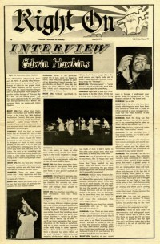

CMnexus
: Contemporary Christian culture, music, and media.
|
Edwin HawkinsOn the cover
March 1972
Right On! | Media coverageAlbums & reviews:1969: Let Us Go into the House of the Lord
1969: He's a Friend of Mine
1969: Jesus, Lover of My Soul
1969: More Happy Days
1970: Edwin Hawkins and the Hebrew Boys
1972: I'd Like to Teach the World to Sing
1972: Children Get Together
1973: New World
1974: Live
1977: The Comforter
1981: Live With The Oakland Symphony Orchestra, Vol. 1 1982: Live With The Oakland Symphony, Vol. 2 1983: Mass Choir
1984: Angels Will Be Singing 1984: Have Mercy
1985: The Edwin Hawkins Christmas Album
1987: Give Us Peace
1988: That Name
1991: Face to Face
1991: Edwin Hawkins Music & Arts Seminar Mass Choir: Recorded Live In Los Angeles
1992: O Happy Day Reunion
1993: If You Love Me
1994: Kings and Kingdoms
1997: Music and Arts Seminar Mass Choir: Dallas
1998: Tampa Music and Arts Seminar
Award Summary (Nominations / Wins)
Dove Awards1994 Dove Awards Grammy Awards1970 Grammy Awards- Best Soul Gospel Performance: "Every Man Wants To Be Free"
1972 Grammy Awards- Best Soul Gospel Performance: "Jesu"
1973 Grammy Awards- Best Soul Gospel Performance: New World
1974 Grammy Awards- Best Soul Gospel Performance: Live
1977 Grammy Awards- Best Soul Gospel Performance, Contemporary: "Wonderful!"
1981 Grammy Awards- Best Soul Gospel Performance, Contemporary: Live With The Oakland Symphony Orchestra, Vol. 1
1982 Grammy Awards- Best Soul Gospel Performance, Contemporary: Live With The Oakland Symphony Orchestra, Vol. 1
1984 Grammy Awards- Best Soul Gospel Performance by a Duo or Group: Angels Will Be Singing
1985 Grammy Awards- Best Soul Gospel Performance by a Duo, Group, Choir or Chorus: Have Mercy
1987 Grammy Awards- Best Soul Gospel Performance by a Duo, Group, Choir or Chorus: Give Us Peace
1988 Grammy Awards- Best Soul Gospel Performance by a Duo, Group, Choir or Chorus: That Name
1990 Grammy Awards- Best Contemporary Soul Gospel Album: Face to Face
1991 Grammy Awards- Best Gospel Album by a Choir or Chorus: Edwin Hawkins Music & Arts Seminar Mass Choir: Recorded Live In Los Angeles
1992 Grammy Awards- Best Gospel Album by a Choir or Chorus: Edwin Hawkins Music & Arts Seminar Mass Choir: Recorded Live In Los Angeles
1993 Grammy Awards- Best Gospel Album by a Choir or Chorus: If You Love Me
1994 Grammy Awards- Best Gospel Album by a Choir or Chorus: Kings and Kingdoms
1996 Grammy Awards- Best Gospel Album by a Choir or Chorus: Music and Arts Seminar Mass Choir: Dallas
Books about Edwin Hawkins
- "Edwin Hawkins (and the Edwin Hawkins Singers)" in The Encyclopedia of Contemporary Christian Music (Mark Allan Powell, 2002).
|
|